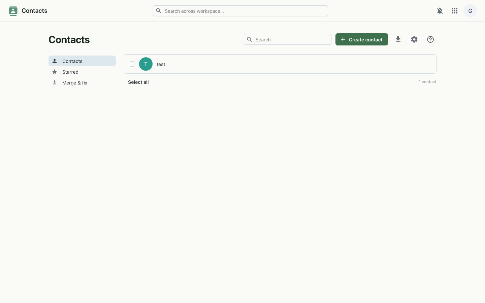

A shared address book for your workspace — the same people directory that also powers the phone.
Contacts keeps the people you work with in one place. Each contact holds names, company, job title, multiple emails and phones, labels and notes. Import from your old tools, organise with labels and groups, and let the same directory power the Telephony dialer.

.vcf files from Apple or Google Contacts and export contacts back out as vCard.Contacts are stored per organisation and served from the workspace API. Import and export run as vCard and CSV in the browser, with server-side export for larger sets. The same records feed the shared directory that Telephony reads to build its dialable phone directory, and every request rides your workspace single sign-on.